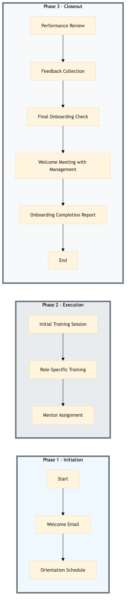

| Role | Steps |
|---|---|
| HR Manager | 1.1 1.2 3.1 3.2 3.3 3.5 |
| Training Manager | 2.1 |
| Department Manager | 2.2 2.3 3.1 3.4 |
| General Manager | 3.4 |
| Step | Name | Role | System | Input | Output | KPI | Dec? | Exc? | Pain Point / Risk |
|---|---|---|---|---|---|---|---|---|---|
| 1.1 | Welcome Email | HR Manager | Workday HCM | New hire details | Welcome email with onboarding schedule and resources | < 2 min | N | N | Delays in sending welcome emails can cause confusion about the onboarding process. |
| 1.2 | Orientation Schedule | HR Manager | Workday HCM | New hire details | Scheduled orientation sessions | < 5 min | N | N | Overlapping schedules can lead to conflicts and missed training opportunities. |
| 2.1 | Initial Training Session | Training Manager | Oracle OPERA Cloud | New hire details, training modules | Completed initial training session | < 60 min | N | Y | Technical issues with Oracle OPERA Cloud can disrupt training sessions. |
| 2.2 | Role-Specific Training | Department Manager | Oracle MICROS Simphony | New hire details, role-specific tasks | Completed role-specific training session | < 30 min | N | Y | Difficulty in adapting to new systems like Oracle MICROS Simphony can slow down the onboarding process. |
| 2.3 | Mentor Assignment | Department Manager | Workday HCM | New hire details, mentor list | Assigned mentor to new hire | < 10 min | N | N | Inadequate mentor training can lead to ineffective support. |
| 3.1 | Performance Review | Department Manager | Workday HCM | New hire performance data | Performance review report | < 20 min | N | Y | Lack of clear performance metrics can lead to subjective reviews. |
| 3.2 | Feedback Collection | HR Manager | Workday HCM | New hire feedback | Collected feedback report | < 15 min | N | Y | Non-response rates can affect the quality of feedback. |
| 3.3 | Final Onboarding Check | HR Manager | Workday HCM | New hire details, training completion status | Onboarding checklist completed | < 10 min | Y | N | Incomplete checklists can lead to oversight of critical onboarding tasks. |
| 3.4 | Welcome Meeting with Management | General Manager | Workday HCM | New hire details, management team schedule | Completed welcome meeting | < 30 min | N | Y | Scheduling conflicts can delay this important introduction. |
| 3.5 | Onboarding Completion Report | HR Manager | Workday HCM | New hire details, onboarding status | Final onboarding completion report | < 10 min | N | Y | Missing data can lead to inaccurate reports. |
HR-TL-02 is a structured onboarding and induction programme designed to ensure new hires at Marriott Bonvoy hotels are fully prepared and integrated into their roles. This process covers three phases: initiation, execution, and closeout.